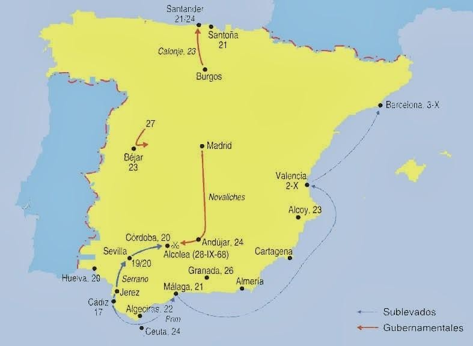
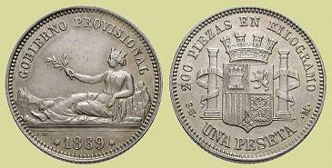
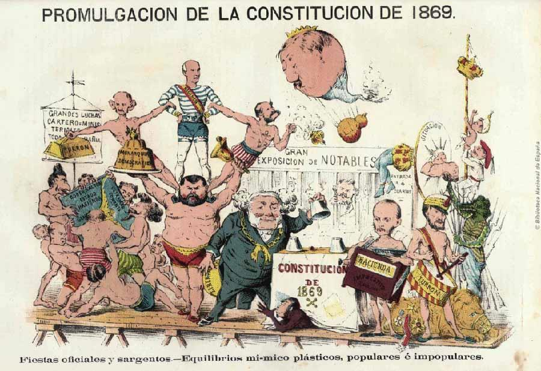
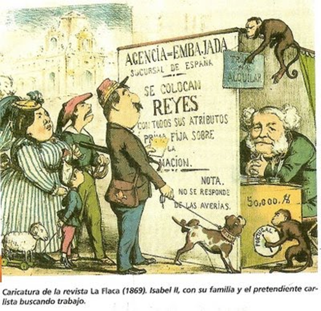
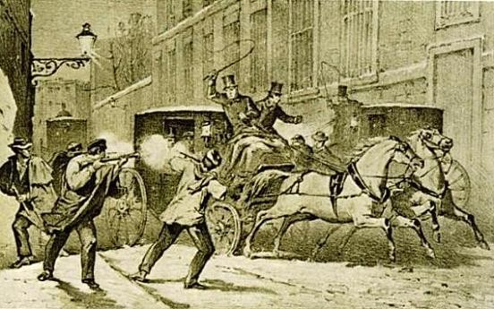
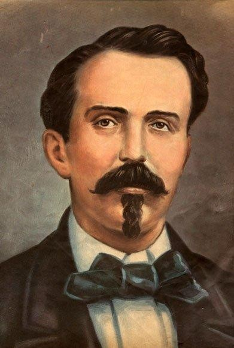
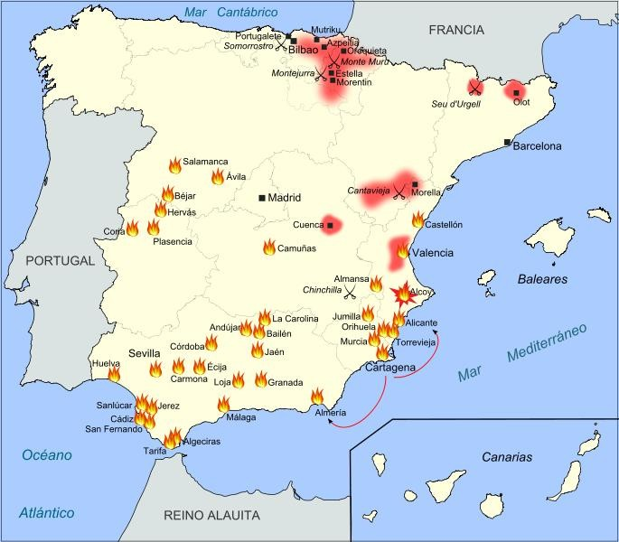
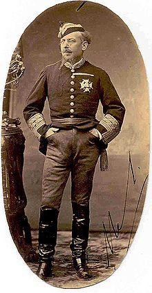
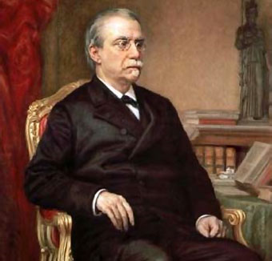
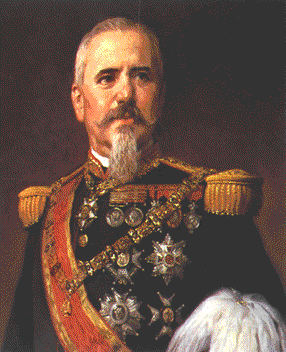

Tema 3: El Sexenio Revolucionario (1868 - 1874)
El primer ensayo de democracia real en España: del destronamiento de Isabel II a la Primera República y el final de la experiencia parlamentaria.
 Eje cronológico que delimita las etapas fundamentales del Sexenio Democrático (1868 - 1874)
Eje cronológico que delimita las etapas fundamentales del Sexenio Democrático (1868 - 1874)
1. La Revolución de 1868 y la Caída de Isabel II
El periodo conocido como el Sexenio Democrático comenzó con el estallido en septiembre de 1868 de una revuelta militar y popular denominada «La Gloriosa» (o la Septembrina). Esta sublevación desmanteló por completo el régimen moderado isabelino y obligó a la soberana a exiliarse en Francia. El colapso de la monarquía borbónica no fue un acontecimiento repentino, sino el resultado de una acumulación de factores críticos de orden económico, político y social que erosionaron irreversiblemente la legitimidad de Isabel II.
 Imagen 1: Representación alegórica de La Gloriosa y el exilio de la reina Isabel II hacia tierras francesas
Imagen 1: Representación alegórica de La Gloriosa y el exilio de la reina Isabel II hacia tierras francesas
Las Causas de la Crisis Revolucionaria de 1866
A partir del año 1866, coincidiendo con la primera gran crisis del sistema de producción capitalista a escala internacional, España se vio asolada por una crisis económica multidimensional de graves consecuencias:
- Crisis Financiera: Originada por el estallido de la burbuja especulativa en torno a las compañías de ferrocarriles. La escasa rentabilidad de las líneas tendidas debido a la baja demanda de viajeros y mercancías provocó el hundimiento de las acciones ferroviarias en bolsa, arrastrando a bancos y sociedades de crédito a la quiebra absoluta.
- Crisis Industrial: Afectó de forma primordial a la pujante industria textil de Cataluña. El encarecimiento drástico de la materia prima (el algodón en rama) debido al bloqueo de exportaciones provocado por la Guerra de Secesión norteamericana (1861-1865) provocó el cierre de numerosos talleres y fábricas medianas, disparando el desempleo obrero.
- Crisis de Subsistencias: Provocada por una sucesión de malas cosechas de trigo y alimentos básicos. La escasez disparó el precio del pan en un 67%, sumiendo a las clases populares del campo andaluz y de las principales ciudades en el hambre, el desabastecimiento y la desesperación.
En el plano político, el sistema se encontraba bloqueado de forma dictatorial por el Partido Moderado. Los ministros moderados (Narváez y González Bravo) gobernaban al margen de las Cortes y reprimían con dureza militar cualquier atisbo de oposición. Progresistas y demócratas, viéndose marginados de las vías legales de participación, optaron por preparar un movimiento armado revolucionario, firmando en el verano de 1866 el histórico Pacto de Ostende en Bélgica, con el fin de derrocar a los Borbones y dejar en manos de unas Cortes electas por sufragio universal el destino nacional.
Asimismo, influyó decisivamente la alarmante impopularidad de la reina Isabel II, cuya imagen pública estaba hundida debido a su ostentosa vida privada y la influencia de su camarilla palaciega íntima, integrada por personajes como su confesor el padre Claret, sor Patrocinio (la célebre «monja de las llagas» que alegaba estigmas milagrosos) y su favorito de la corte, Carlos Marfori, considerado el representante de la corrupción del régimen.
Desarrollo y Triunfo del Pronunciamiento
El 19 de septiembre de 1868, el almirante unionista Juan Bautista Topete sublevó a la escuadra nacional anclada en la bahía de Cádiz, contando con el apoyo financiero de la burguesía mercantil e industrial interesada en restablecer los negocios. Al alzamiento militar se sumaron de inmediato el general unionista Francisco Serrano y el carismático general progresista Juan Prim, quien dirigió una emotiva arenga a los gaditanos bajo el lema del Frente Patriótico: «¡Viva España con honra!».

Imagen 2: Distribución de focos sublevados y ejércitos de la Revolución de 1868Desde Cádiz, el levantamiento se extendió de forma imparable por toda la geografía española mediante la constitución de Juntas Revolucionarias locales en ciudades y pueblos de base popular que exigían el fin de los consumos y las quintas. El enfrentamiento de las fuerzas leales a la reina contra las columnas revolucionarias de Serrano se saldó con la victoria de estos últimos en la célebre Batalla del Puente de Alcolea (Córdoba). Al conocer la derrota y la falta de apoyos de los capitanes generales, Isabel II, que veraneaba en Lequeitio (Vizcaya), huyó el 30 de septiembre con rumbo a su definitivo exilio en París.
2. El Gobierno Provisional y la Constitución de 1869
Una vez constituido el nuevo poder en Madrid, se formó un Gobierno Provisional presidido por el general unionista Serrano (con Prim en la cartera de Guerra, Sagasta en Gobernación y Laureano Figuerola en Hacienda). El gabinete se propuso la doble e inmediata misión de restablecer el orden público y dotar al Estado de un nuevo marco legal a través de la convocatoria de unas Cortes Constituyentes extraordinarias.
 Imagen 3: Los ministros integrantes del Gobierno Provisional de 1869 (fotografía de J. Laurent)
Imagen 3: Los ministros integrantes del Gobierno Provisional de 1869 (fotografía de J. Laurent)
Las primeras y drásticas medidas del Gobierno Provisional consistieron en desarmar la Milicia Nacional y ordenar la disolución de las Juntas Revolucionarias de base popular. De esta manera, Serrano y Prim dejaban bien patente a la burguesía y a los inversores internacionales que la revolución tenía por objeto derrocar a los Borbones y modernizar la economía capitalista, pero en ningún caso permitir una transformación social radical o un ataque contra el derecho de propiedad privada.
A. Las Reformas Económicas y Financieras: Nace la Peseta
Para sanear el caótico estado de la Hacienda pública, lastrada por una deuda acumulada que superaba los 22.000 millones de reales y los préstamos contraídos con la banca extranjera, el ministro de Hacienda Laureano Figuerola impulsó reformas estructurales clave de corte librecambista:
- Se decretó en octubre de 1868 la creación de la Peseta como unidad monetaria unificada nacional, sustituyendo los antiguos reales y escudos y facilitando la inserción de España en los mercados internacionales.
- Se decretó la polémica Ley de Minas de 1871 (considerada una desamortización del subsuelo), que vendió las concesiones de explotación de los ricos yacimientos mineros (como Riotinto en Huelva o Almadén en Ciudad Real) a consorcios y compañías extranjeras para conseguir ingresos inmediatos y saldar las deudas financieras de la Corona.
- Se aprobó el Arancel Figuerola (1869), una medida librecambista avanzada que rebajó de forma sustancial las tasas arancelarias exteriores. Ello desató la indignación armada de los industriales textiles de Cataluña y de los grandes productores de cereal de Castilla, que veían peligrar su tradicional control proteccionista sobre el mercado peninsular.
- Se introdujo la contribución personal, un impuesto directo que gravaba proporcionalmente a cada ciudadano según sus ingresos y rentas declaradas, combatiendo la evasión fiscal.

Imagen 4: Anverso y reverso de la primera peseta acuñada bajo el Gobierno Provisional de 1869B. La Constitución Democrática de 1869
En enero de 1869 se celebraron elecciones generales a Cortes Constituyentes mediante el sufragio universal masculino directo para varones mayores de 25 años. De los 351 escaños elegidos en unas Cortes bicamerales, la coalición gubernamental defensora de una monarquía democrática obtuvo una victoria arrolladora (progresistas -159 diputados-, unionistas -69- y demócratas -20-), frente a la firme oposición de los republicanos federales de Pi y Margall (69), los carlistas tradicionales (18) e isabelinos moderados (14).

Imagen 5: Frontispicio oficial impreso para la promulgación de la Constitución de 1869🏛️ Características Básicas de la Carta Magna del 69
- Soberanía Nacional de Base Popular: Se rompe con el derecho divino. El poder emana exclusivamente de la Nación de ciudadanos representados en las Cortes.
- Declaración de Derechos Individuales Plenos: Se regulan con rango constitucional las libertades de opinión, imprenta, educación, la inviolabilidad del correo y del domicilio, y por primera vez en nuestra historia contemporánea, el derecho a la libre asociación y reunión de los trabajadores.
- Separación Iglesia-Estado y Libertad de Cultos: Se introduce el libre ejercicio público o privado de cualquier culto para extranjeros y españoles de confesión alternativa, aunque el Estado mantiene el compromiso financiero de sufragar los gastos de la Iglesia Católica como transacción con los moderados.
- Monarquía Democrática de Consenso: El rey ostenta el poder ejecutivo a través de sus ministros gubernamentales, pero limitándose a un papel simbólico y parlamentario («el rey reina pero no gobierna»). El poder supremo legislativo recae en las Cortes de forma incuestionable.
3. La Monarquía Democrática de Amadeo I de Saboya (1871-1873)
Proclamada la Constitución de 1869 en la que se definía a España como una monarquía constitucional y democrática, pero estando los Borbones excluidos por ley, las Cortes establecieron una Regencia nacional que recayó en el general unionista Francisco Serrano, mientras que el general Juan Prim asumió la jefatura de Gobierno y el encargo supremo de buscar un monarca de dinastía de talante liberal por las cancillerías europeas.

Imagen 6: Caricatura satírica de la revista «La Flaca» ironizando sobre la búsqueda de un rey en EuropaTras descartar a candidatos impopulares (como el duque de Montpensier, cuñado de la reina exiliada, o candidatos de las casas de Hohenzollern y de Portugal), las Cortes eligieron en noviembre de 1870 al príncipe italiano Amadeo de Saboya. Amadeo, hijo del artífice de la unificación italiana Víctor Manuel II, pertenecía a una dinastía de marcado carácter liberal y democrático que encajaba de forma idónea en el modelo constitucional del 69.
A. Un Trágico Comienzo: El Asesinato del General Prim
El reinado democrático nació marcado por la fatalidad. El 30 de diciembre de 1870, justo el mismo día en que Amadeo de Saboya desembarcaba en el puerto de Cartagena, se enteró de que su principal valedor y protector político, el general Juan Prim, había fallecido en Madrid víctima de una infección de heridas tras haber sido emboscado y tiroteado por asaltantes armados con trabucos tres días antes en la nevada calle del Turco. Sin la guía intelectual y la fuerza armada del general Prim, el monarca italiano se encontró completamente huérfano de apoyos políticos y deparó un aislamiento irremediable en la capital.
 Imagen 7: Retrato oficial del rey Amadeo I de Saboya
Imagen 7: Retrato oficial del rey Amadeo I de Saboya

Imagen 8: Grabado pictórico del tiroteo a la carroza de Prim Imagen 9: Amadeo I velando el cuerpo de Prim en Madrid
Imagen 9: Amadeo I velando el cuerpo de Prim en Madrid
B. Un Reinado en Constante Oposición Multilateral
A pesar de su innegable buena voluntad constitucional y respeto a las leyes, el rey Amadeo I se topó de forma inmediata con un frente de hostilidad total de todos los estamentos de la sociedad:
- La Iglesia Católica y el Clero: Se opusieron firmemente al monarca por jurar una constitución laica que establecía la libertad de cultos y por pertenecer a la casa de Saboya, dinastía que acababa de expropiar y disolver los Estados Pontificios del Papa en Roma para unificar Italia.
- Los Republicanos Federales: Reclamaban reformas de calado social mucho más radicales, considerando la monarquía democrática como un simple sucedáneo conservador.
- La Oligarquía y los Terratenientes (Alfonsinos): Dirigidos por el sagaz político conservador Antonio Cánovas del Castillo, boicotearon de forma sutil al monarca ganando adeptos y fortunas de la alta burguesía azucarera a favor de la causa de restauración dinástica de Alfonso XII, hijo de Isabel II.
- La Gran Burguesía Comercial e Industrial: Retiró el apoyo a los ministros demócratas a causa de los decretos para abolir la esclavitud en ultramar y regular tímidamente el trabajo infantil, sintiendo amenazados sus intereses de propiedad de esclavos y fábricas.
- El estallido de la Tercera Guerra Carlista (1872-1876): Los partidarios del pretendiente absolutista Carlos VII iniciaron un gran levantamiento armado foralista y tradicionalista en el País Vasco, Navarra y áreas rurales del Maestrazgo y Cataluña, forzando al monarca a movilizar ejércitos en el norte peninsular.
C. El Problema Colonial: La Guerra de los Diez Años en Cuba (1868-1878)
En octubre de 1868, el rico terrateniente y criollo cubano Carlos Manuel de Céspedes proclamó el célebre Grito de Yara («¡Viva Cuba libre!»), dando inicio a la primera guerra de independencia cubana. Céspedes emitió un manifiesto de carácter marcadamente antiesclavista, anticolonialista y de liberación nacional americana, liberando de forma inmediata a los esclavos de sus propias plantaciones azucareras para sumarlos a las fuerzas revolucionarias insurrectas. El bando realista e integrista azucarero de la isla bloqueó militarmente cualquier reforma progresista que pretendiera decretar la Corona en favor de la abolición civil, provocando una guerra de desgaste sangrienta y desgarradora que lastró la economía de la metrópoli durante una década.

Imagen 10: Retrato oficial de Carlos Manuel de Céspedes Imagen 11: Grabado del embarque de voluntarios civiles que partían a Cuba en el puerto de Cádiz
Imagen 11: Grabado del embarque de voluntarios civiles que partían a Cuba en el puerto de Cádiz
La inestabilidad fue tan galopante que en dos años de reinado se sucedieron seis gobiernos efímeros y tres elecciones generales incapaces de restablecer el consenso parlamentario de las facciones liberales divididas. Harto ante la ingobernabilidad, el constante boicot del cuerpo de artillería militar y la insurrección en las Antillas y el norte, Amadeo I presentó su irrevocable abdicación y renuncia al trono español el 11 de febrero de 1873, volviendo de inmediato a su natal Italia.
4. La Primera República Española (1873 - 1874)
El mismo 11 de febrero de 1873, ante la abdicación de Amadeo de Saboya y sin margen de maniobra para buscar un nuevo rey en las cancillerías de una Europa predominantemente monárquica y conservadora, el Congreso y el Senado se reunieron en sesión parlamentaria conjunta para proclamar la Primera República Española, siendo aprobada la resolución por una amplia mayoría circunstancial de 258 votos a favor y 32 en contra. Para presidir el primer gobierno republicano fue elegido el federalista moderado Estanislao Figueras.
 Imagen 12: Litografía satírica «La Niña Bonita» representando la llegada de la República
Imagen 12: Litografía satírica «La Niña Bonita» representando la llegada de la República
Se trató de un nacimiento político de extrema debilidad institucional, puesto que la mayoría parlamentaria que votó a favor del nuevo régimen republicano estaba integrada en realidad por diputados monárquicos encubiertos que únicamente pretendían ganar tiempo y falsear las Juntas para organizar de manera pacífica el definitivo retorno alfonsino de los Borbones. Esta nula fe de los gobernantes deparó una inestabilidad brutal en todo el país, que se manifestó en el aislamiento diplomático internacional (la República española solo fue reconocida formalmente por los Estados Unidos y la Confederación Suiza) y en una dramática sucesión de cuatro presidentes del gobierno en apenas once meses de mandato (Figueras, Pi y Margall, Salmerón y Castelar).
A. Los Desafíos Armados de la República y el Estallido del Cantonalismo
Tras la dimisión de Figueras, el gobierno del país pasó a manos de Francisco Pi y Margall, eminente ideólogo del federalismo quien convocó Cortes Constituyentes extraordinarias para debatir el Proyecto de Constitución Federal de 1873. Este ambicioso texto definía que la Nación española estaba integrada por 17 Estados federados soberanos (incluyendo de igual a igual a la isla de Cuba), estructurando el poder en tres niveles independientes: el municipio soberano, el Estado regional autónomo y el Estado federal de coordinación exterior. El texto reconocía la estricta separación Iglesia-Estado, la libertad religiosa plena, la abolición definitiva de la esclavitud en las colonias y la supresión de las quintas.
 Imagen 13: Pi i Margall desbordado por los niños de las autonomías locales
Imagen 13: Pi i Margall desbordado por los niños de las autonomías locales

Imagen 14: Focos territoriales del conflicto carlista y el estallido del cantonalismoSin embargo, los republicanos radicales intransigentes y los núcleos obreros anarquistas de la AIT (Asociación Internacional de Trabajadores) consideraron que el ritmo de reformas de Pi y Margall era excesivamente lento y decretaron de forma unilateral e insurreccional el estallido de la revolución cantonal en julio de 1873. En ciudades y municipios de Levante y Andalucía (Cartagena, Sevilla, Málaga, Cádiz, Valencia, Algeciras) se proclamaron cantones independientes soberanos que acuñaban su propia moneda, emitían leyes locales y declaraban la guerra al gobierno central, fracturando de manera definitiva el régimen republicano.
Al negarse a reprimir por las armas la rebelión de los cantones populares para evitar un derramamiento de sangre civil, Pi y Margall dimitió, asumiendo la presidencia el moderado Nicolás Salmerón, quien optó por suspender las negociaciones y ordenar al ejército regular sofocar las insurrecciones cantonales por la fuerza, confiando las campañas de asedio a generales conservadores de prestigio como Serrano, Pavía y Martínez Campos. Salmerón dimitió a principios de septiembre tras declararse moralmente incapaz de firmar las sentencias de muerte impuestas por los tribunales militares contra los líderes cantonalistas.
B. El Giro Autoritario de Castelar, el Golpe de Pavía y la Restauración
La presidencia del ejecutivo recayó entonces en el republicano unitario conservador Emilio Castelar, quien gobernó bajo el lema del orden y la autoridad nacional. Castelar consiguió de las Cortes plenos poderes de excepción, clausuró provisionalmente el Congreso de los Diputados para neutralizar a la oposición federal de izquierdas y reorganizó las fuerzas del ejército para acabar con la insurrección carlista en el norte y la resistencia heroica y numantina del cantón fortificado de Cartagena.

Imagen 15: Retrato fotográfico del general Manuel Pavía Imagen 16: El general Manuel Pavía disolviendo las Cortes republicanas
Imagen 16: El general Manuel Pavía disolviendo las Cortes republicanas
El 3 de enero de 1874 se reabrieron solemnemente las Cortes Generales. Al confirmarse que Castelar había perdido una moción de confianza parlamentaria y que se disponía a formarse un gabinete de federalistas de izquierda partidarios del modelo cantonal, el capitán general de Castilla la Nueva, Manuel Pavía, penetró con la fuerza armada militar y destacamentos de la Guardia Civil en el Congreso de los Diputados, disolviendo las Cortes de un plumazo y dando inicio al fin fáctico de la República Federal.
Pavía entregó de forma provisional la jefatura del Estado al general unionista Serrano, quien instauró una dictadura autoritaria: suspendió de inmediato las garantías constitucionales del 69, disolvió de forma definitiva el parlamento democrático y decretó la ilegalización y persecución de la AIT y de las sociedades obreras en las calles. Durante el año de dictadura militar de Serrano, el político conservador Antonio Cánovas del Castillo preparó la restauración borbónica, redactando el Manifiesto de Sandhurst (diciembre de 1874) en el que el joven príncipe Borbón prometía establecer una monarquía dinástica constitucional, conservadora y plenamente católica capaz de asegurar la estabilidad social y la propiedad de la burguesía terrateniente.

Imagen 18: Antonio Cánovas del Castillo, ideólogo de la Restauración
Imagen 19: Retrato oficial del general Arsenio Martínez CamposFinalmente, el 29 de diciembre de 1874, un pronunciamiento militar directo del general moderado Arsenio Martínez Campos en la localidad de Sagunto (Valencia) proclamó de forma solemne rey de España a Alfonso XII, disolviendo los últimos focos republicanos y abriendo paso a la larga etapa contemporánea de la Restauración canovista.
5. El Sexenio Revolucionario en Canarias: Republicanismo y Obrerismo
El triunfo de la Revolución de Septiembre de 1868, conocida como «La Gloriosa», abrió en el archipiélago canario un periodo de dinamismo político y supuso el despertar del obrerismo organizado. La fisionomía social de las principales ciudades costeras (Santa Cruz de Tenerife y Las Palmas) se vio alterada por el clima de libertades de la Constitución de 1869, la laicización de la enseñanza y el desarrollo del asociacionismo popular.
El republicanismo federal se consolidó en Canarias como una corriente urbana de considerable arraigo entre la pequeña burguesía, los artesanos y los trabajadores de los puertos. Sus proclamas centraban sus demandas en tres ejes fundamentales:
- La abolición del sistema de las quintas de reclutamiento militar, una vía de leva obligatoria que enviaba a los hijos de las capas populares a combatir en la Guerra de Cuba, mientras las familias acomodadas podían eximirse pagando la redención en metálico.
- La supresión definitiva de los impuestos indirectos de consumos, gravámenes que encarecían los productos de primera necesidad (como el pan, el aceite o la harina) afectando gravemente a jornaleros y trabajadores portuarios.
- El fin de la dinastía borbónica y el establecimiento de una República democrática y federal.
🇮🇨 Nicolás Estévanez y el Federalismo Canario durante la Primera República (1873)
Durante la Primera República Española (1873), cobró un papel protagonista el militar, político y escritor tinerfeño Nicolás Estévanez y Murphy, quien desempeñó el cargo de Ministro de la Gobernación en el gabinete republicano de Pi y Margall. Como ministro, Estévanez tuvo que afrontar desde Madrid la compleja crisis del movimiento cantonalista peninsular, al que se opuso decididamente por considerar que el federalismo debía construirse desde las leyes y la Constitución, y no mediante la insurrección armada.
Para encauzar las aspiraciones de autogobierno y mitigar el enconado pleito insular por la capitalidad única, el republicanismo federal canario defendió un modelo de descentralización en el que cada isla principal pudiera gestionar sus asuntos locales mediante consejos o cabildos autónomos, integrándose el archipiélago como un estado o región federada dentro de la República Española.
Asimismo, bajo el amparo de las libertades del Sexenio, surgieron en las capitales insulares las primeras sociedades de socorros mutuos y gremios obreros (tipógrafos, panaderos o tabaqueros), asentando las bases del movimiento obrero y la solidaridad de clase en el archipiélago.